26 三角函数（Trigonometric Functions）
三角学(I) 建立了锐角
的正弦、余弦与正切： 、 对 边 斜 边 、 邻 边 斜 边 ，并推得平方和恒等式、商数恒等式、互余关系与特殊角的精确值。但那套定义有两处局限：其一，它只对锐角有意义，无法回答 对 边 邻 边 、 是什么；其二，它把 看作「直角三角形的一个比值」，而非「以角为自变量的函数」。本章的任务正是消除这两处局限：先把角推广到任意角，再把三角比推广为定义在任意角上的函数。 DSE 常规课程中，三角函数的自变量一律以角度制（度）给出，弧度制仅作一般讲解。弧度制的价值在于提供一个换算关系：任意角度都可以换算成一个实数（其弧度值），因此以角度为自变量的三角函数，本质上仍是一个定义在实数上的函数。本章主线采用角度制，仅在 §26.1 简述这一换算关系。
本章按概念依赖顺序铺排：先简述弧度制，说明「角度可换算为实数」（§26.1）；再用单位圆把三角比从锐角推广到任意角，得到定义在任意角上的三角函数，并建立符号法则、化锐角公式与周期性（§26.2）；据此绘制并分析正弦、余弦、正切的图像与变换（§26.3）；最后因周期性导致非单射，限制定义域定义反三角函数（§26.4），并作全章总结。
26.1 弧度法（Radian Measure）
本节难度上限：T C ｜ C D ｜ E D ｜ Q D
本节一般讲解弧度制，重点落在「角度
实数」的换算关系上。本节内容 DSE 常规课程不作要求，仅作概念说明。
26.1.1 弧度：角度与实数的换算
三角学(I) 中讨论的角以「度」（
在半径为
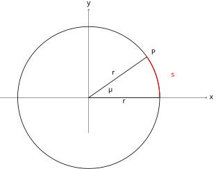
查看 TikZ 原始碼
\begin{document}
\begin{tikzpicture}[scale=3]
% coordinate axes
\draw[->] (-1.5,0) -- (2.0,0) node[right]{$x$};
\draw[->] (0,-0.6) -- (0,1.5) node[above]{$y$};
% circle of radius r = 1.2
\draw[thick] (0,0) circle (1.2);
% initial side (x-axis) and terminal side at angle theta
\draw[thick] (0,0) -- node[below]{$r$} (1.2,0);
\draw[thick] (0,0) -- node[above left]{$r$} (1.2*0.819, 1.2*0.574);
% the arc s highlighted
\draw[very thick, red] (1.2,0) arc (0:35:1.2);
\node[red] at (1.42,0.38) {$s$};
% central angle theta
\node at (0.36,0.14) {$\theta$};
% terminal point
\node at (1.2*0.819+0.12, 1.2*0.574+0.08) {$P$};
\end{tikzpicture}
\end{document}图 26-1：弧长
与半径 的比值 给出圆心角 的弧度数。
整个圆周的弧长
常用对照：
弧度是弧长与半径的比值，两个长度之比，因而是纯数（无量纲）。任意角度
弧度制在微积分中不可或缺：
半径为
由
26.2 任意角的三角比（Trigonometric Ratios of Any Angle）
本节难度上限：T B+ ｜ C B- ｜ E B ｜ Q C
本节以角度制为自变量，用单位圆把 三角学(I) 的锐角三角比推广到任意角，得到三角函数并建立符号法则、化锐角公式与周期性。
26.2.1 任意角的概念
在平面中，一条射线从初始位置
在平面中，一条射线从初始位置
- 逆时针旋转
- 旋转量为零
- 角的大小可超过
对任意角
将角的顶点置于原点、始边与
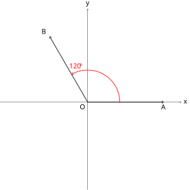
查看 TikZ 原始碼
\begin{document}
\begin{tikzpicture}[scale=3]
% coordinate axes
\draw[->] (-1.5,0) -- (1.6,0) node[right]{$x$};
\draw[->] (0,-1.5) -- (0,1.6) node[above]{$y$};
% initial side on positive x-axis
\draw[thick, ->] (0,0) -- (1.3,0) node[below]{$A$};
% terminal side at 120 degrees
\draw[thick, ->] (0,0) -- (-0.65,1.126) node[above left]{$B$};
% rotation arc from A to B (counterclockwise)
\draw[->, red, thick] (0.55,0) arc (0:120:0.55);
\node[red] at (-0.2,0.62) {$120^{\circ}$};
% origin
\node[below left] at (0,0) {$O$};
\end{tikzpicture}
\end{document}图 26-2：标准位置的任意角。始边
与 轴正半轴重合，逆时针旋转 得到终边 。
26.2.2 单位圆定义
三角学(I) 中的直角三角形定义仅适用于锐角（
以原点
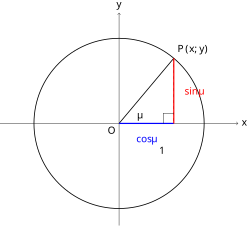
查看 TikZ 原始碼
\begin{document}
\begin{tikzpicture}[scale=3]
% coordinate axes
\draw[->] (-1.4,0) -- (1.4,0) node[right]{$x$};
\draw[->] (0,-1.2) -- (0,1.3) node[above]{$y$};
% unit circle
\draw[thick] (0,0) circle (1);
% point P at theta = 50 degrees
\coordinate (P) at (0.643, 0.766);
\draw[thick] (0,0) -- (P) node[above right]{$P(x,y)$};
% projection onto x-axis
\draw[dashed] (P) -- (0.643,0);
% horizontal segment (cos theta) and vertical segment (sin theta)
\draw[blue, very thick] (0,0) -- (0.643,0);
\draw[red, very thick] (0.643,0) -- (P);
\node[blue] at (0.32,-0.18) {$\cos\theta$};
\node[red] at (0.88,0.38) {$\sin\theta$};
% right angle mark at the foot
\draw (0.52,0) -- (0.52,0.12) -- (0.643,0.12);
% angle theta
\node at (0.24,0.10) {$\theta$};
% unit marker
\node at (0.5,-0.32) {$1$};
\node[below left] at (0,0) {$O$};
\end{tikzpicture}
\end{document}图 26-3：单位圆定义。
是点 的纵坐标， 是横坐标， 。
当
26.2.3 三角函数
由单位圆定义，每个角
自变量
对所有角
(1) 点
(2) 由定义
图 26-3 正是基本恒等式的几何图像：点
在单位圆上， 即 。
26.2.4 各象限的符号（ASTC）
| 象限 | 为正的函数 | |||
|---|---|---|---|---|
| I（ |
All | |||
| II（ |
Sine | |||
| III（ |
Tangent | |||
| IV（ |
Cosine |
查看 TikZ 原始碼
\begin{document}
\begin{tikzpicture}[scale=3]
% coordinate axes
\draw[->] (-1.4,0) -- (1.4,0) node[right]{$x$};
\draw[->] (0,-1.4) -- (0,1.4) node[above]{$y$};
% unit circle
\draw[thick] (0,0) circle (1);
% quadrant labels
\node at (0.42,0.42) {\textbf{A}};
\node at (-0.42,0.42) {\textbf{S}};
\node at (-0.42,-0.42) {\textbf{T}};
\node at (0.42,-0.42) {\textbf{C}};
% quadrant markers
\node[below left] at (0,0) {$O$};
\node at (1.12,1.08) {I};
\node at (-1.12,1.08) {II};
\node at (-1.12,-1.08) {III};
\node at (1.12,-1.08) {IV};
\end{tikzpicture}
\end{document}图 26-4：单位圆四象限与 ASTC 符号。逆时针读各象限首字母恰为 A-S-T-C。
由
26.2.5 化锐角公式
任意角的三角比，都可以借助单位圆的对称性化归为某个锐角
按主轴
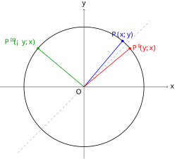
查看 TikZ 原始碼
\begin{document}
\begin{tikzpicture}[scale=3]
% coordinate axes
\draw[->] (-1.4,0) -- (1.4,0) node[right]{$x$};
\draw[->] (0,-1.2) -- (0,1.3) node[above]{$y$};
% unit circle
\draw[thick] (0,0) circle (1);
% line y = x (mirror axis)
\draw[dashed, gray] (-1.1,-1.1) -- (1.1,1.1);
% P(alpha) at 50 deg, P(90-alpha) mirror over y=x, P(90+alpha)
\coordinate (P) at (0.643,0.766);
\coordinate (P1) at (0.766,0.643);
\coordinate (P2) at (-0.766,0.643);
\draw[blue, thick] (0,0) -- (P);
\draw[red, thick] (0,0) -- (P1);
\draw[green!60!black, thick] (0,0) -- (P2);
\filldraw[blue] (P) circle (0.5pt);
\filldraw[red] (P1) circle (0.5pt);
\filldraw[green!60!black] (P2) circle (0.5pt);
\node[blue, above] at (P) {$P(x,y)$};
\node[red, right] at (P1) {$P'(y,x)$};
\node[green!60!black, above left] at (P2) {$P''(-y,x)$};
\node[below left] at (0,0) {$O$};
\end{tikzpicture}
\end{document}图 26-5A：设
的终边点为 。 即 的终边点，是 关于直线 的对称点； 即 的终边点，由 逆时针旋转 得到。
设
求
函数名不变，符号按变换前的函数判：
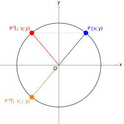
查看 TikZ 原始碼
\begin{document}
\begin{tikzpicture}[scale=3]
% coordinate axes
\draw[->] (-1.4,0) -- (1.4,0) node[right]{$x$};
\draw[->] (0,-1.4) -- (0,1.4) node[above]{$y$};
% unit circle
\draw[thick] (0,0) circle (1);
% P(alpha), P(180-alpha) y-axis mirror, P(180+alpha) origin mirror
\coordinate (P) at (0.643,0.766);
\coordinate (P1) at (-0.643,0.766);
\coordinate (P2) at (-0.643,-0.766);
\draw[blue, thick] (0,0) -- (P);
\draw[red, thick] (0,0) -- (P1);
\draw[orange, thick] (0,0) -- (P2);
% symmetry dashed lines
\draw[dashed, gray] (P) -- (P1);
\draw[dashed, gray] (P) -- (P2);
\filldraw[blue] (P) circle (1.5pt);
\filldraw[red] (P1) circle (1.5pt);
\filldraw[orange] (P2) circle (1.5pt);
\node[blue, above right] at (P) {$P(x,y)$};
\node[red, above left] at (P1) {$P'(-x,y)$};
\node[orange, below left] at (P2) {$P''(-x,-y)$};
\node[below left] at (0,0) {$O$};
\end{tikzpicture}
\end{document}图 26-5B：设
的终边点为 。 即 的终边点，关于 轴对称； 即 的终边点，关于原点对称。
设
求
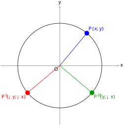
查看 TikZ 原始碼
\begin{document}
\begin{tikzpicture}[scale=3]
% coordinate axes
\draw[->] (-1.4,0) -- (1.4,0) node[right]{$x$};
\draw[->] (0,-1.4) -- (0,1.4) node[above]{$y$};
% unit circle
\draw[thick] (0,0) circle (1);
% P(alpha), P(270-alpha), P(270+alpha)
\coordinate (P) at (0.643,0.766);
\coordinate (P1) at (-0.766,-0.643);
\coordinate (P2) at (0.766,-0.643);
\draw[blue, thick] (0,0) -- (P);
\draw[red, thick] (0,0) -- (P1);
\draw[green!60!black, thick] (0,0) -- (P2);
\filldraw[blue] (P) circle (1.5pt);
\filldraw[red] (P1) circle (1.5pt);
\filldraw[green!60!black] (P2) circle (1.5pt);
\node[blue, above right] at (P) {$P(x,y)$};
\node[red, below left] at (P1) {$P'(-y,-x)$};
\node[green!60!black, below right] at (P2) {$P''(y,-x)$};
\node[below left] at (0,0) {$O$};
\end{tikzpicture}
\end{document}图 26-5C：设
的终边点为 。 即 的终边点（第三象限）， 即 的终边点（第四象限）。
求
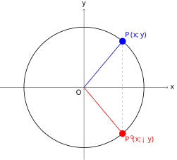
查看 TikZ 原始碼
\begin{document}
\begin{tikzpicture}[scale=3]
% coordinate axes
\draw[->] (-1.4,0) -- (1.4,0) node[right]{$x$};
\draw[->] (0,-1.2) -- (0,1.3) node[above]{$y$};
% unit circle
\draw[thick] (0,0) circle (1);
% P(alpha) and its x-axis mirror
\coordinate (P) at (0.643,0.766);
\coordinate (P1) at (0.643,-0.766);
\draw[blue, thick] (0,0) -- (P);
\draw[red, thick] (0,0) -- (P1);
\draw[dashed, gray] (P) -- (P1);
\filldraw[blue] (P) circle (1.5pt);
\filldraw[red] (P1) circle (1.5pt);
\node[blue, above right] at (P) {$P(x,y)$};
\node[red, below right] at (P1) {$P'(x,-y)$};
\node[below left] at (0,0) {$O$};
\end{tikzpicture}
\end{document}图 26-5D：
即 与 的终边点，是 关于 轴的对称点。
设
求
诱导公式汇总表
设
| 角 | |||
|---|---|---|---|
记忆要点：
口诀：九十、二百七，余函数互换；一百八、三百六，函数名不变。符号看变换后之角，ASTC 定原函数正负。
例如
此外，
26.2.6 三角函数的周期性与解三角方程
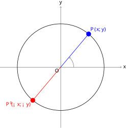
查看 TikZ 原始碼
\begin{document}
\begin{tikzpicture}[scale=3]
% coordinate axes
\draw[->] (-1.4,0) -- (1.4,0) node[right]{$x$};
\draw[->] (0,-1.4) -- (0,1.4) node[above]{$y$};
% unit circle
\draw[thick] (0,0) circle (1);
% P at theta = 50 deg, opposite point at theta+180 deg
\coordinate (P) at (0.643,0.766);
\coordinate (Pp) at (-0.643,-0.766);
\draw[blue, thick] (0,0) -- (P);
\draw[red, thick] (0,0) -- (Pp);
\filldraw[blue] (P) circle (1.5pt);
\filldraw[red] (Pp) circle (1.5pt);
% rotation arc at O (partial turn)
\draw[->, gray, thick] (0.3,0) arc (0:50:0.3);
\node[blue, above right] at (P) {$P(x,y)$};
\node[red, below left] at (Pp) {$P'(-x,-y)$};
\node[below left] at (0,0) {$O$};
\end{tikzpicture}
\end{document}图 26-6：周期性的几何本质是旋转。设角
的终边点为 ：转满 终边回到同一点 ，转 到对径点 。
旋转
最小性可用反证法验证。
以
但
周期性是解三角方程的理论基础：方程的一个解会「复制」出无穷多个解。
- 若
- 若
- 若
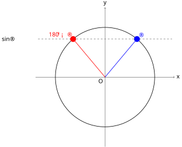
查看 TikZ 原始碼
\begin{document}
\begin{tikzpicture}[scale=3]
% coordinate axes
\draw[->] (-1.4,0) -- (1.4,0) node[right]{$x$};
\draw[->] (0,-1.4) -- (0,1.4) node[above]{$y$};
% unit circle
\draw[thick] (0,0) circle (1);
% horizontal line y = sin(50 deg) = 0.766
\draw[dashed, gray, thick] (-1.35,0.766) -- (1.35,0.766);
\coordinate (P1) at (0.643,0.766);
\coordinate (P2) at (-0.643,0.766);
\filldraw[blue] (P1) circle (1.6pt);
\filldraw[red] (P2) circle (1.6pt);
\draw[blue, thick] (0,0) -- (P1);
\draw[red, thick] (0,0) -- (P2);
\node[blue,above right] at (P1) {$\alpha$};
\node[red,above left] at (P2) {$180^{\circ}-\alpha$};
\node[left] at (-1.8,0.766) {$\sin\alpha$};
\node[below left] at (0,0) {$O$};
\end{tikzpicture}
\end{document}图 26-7：解
等价于「在单位圆上找纵坐标等于 的点」。水平线恰好与单位圆交于角 与 两个终边点。
- 单位圆上纵坐标
- 单位圆上横坐标
- 因
通解公式刻画了三角方程的全部解，而实际问题通常只要求指定范围（最常见
解
判解况：
找特解：对
通解展开：把特解
限范围：取适当的
贯穿例：解
把
| 条件 | 全部解（通解） | 解的个数 | |
|---|---|---|---|
| 无解 | 无解 | ||
| 第一、二象限各一组 | |||
| 第三、四象限各一组 | |||
- 判解况：若
- 找特解：任取一个满足
- 通解展开：
- 限范围：取适当的
解方程
判解况：
找特解：查特殊角表得
通解展开：
限范围：两支取
自查：
（若只写
解下列方程，其中
(1)
(2)
解
流程与
判解况：
找特解：任取满足
通解展开与限范围：
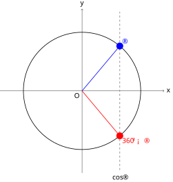
查看 TikZ 原始碼
\begin{document}
\begin{tikzpicture}[scale=3]
% coordinate axes
\draw[->] (-1.4,0) -- (1.4,0) node[right]{$x$};
\draw[->] (0,-1.4) -- (0,1.4) node[above]{$y$};
% unit circle
\draw[thick] (0,0) circle (1);
% vertical line x = cos(50 deg) = 0.643
\draw[dashed, gray, thick] (0.643,-1.35) -- (0.643,1.35);
\coordinate (P1) at (0.643,0.766);
\coordinate (P2) at (0.643,-0.766);
\filldraw[blue] (P1) circle (1.6pt);
\filldraw[red] (P2) circle (1.6pt);
\draw[blue, thick] (0,0) -- (P1);
\draw[red, thick] (0,0) -- (P2);
\node[blue, above right] at (P1) {$\alpha$};
\node[red, below right] at (P2) {$360^{\circ}-\alpha$};
\node[below] at (0.643,-1.42) {$\cos\alpha$};
\node[below left] at (0,0) {$O$};
\end{tikzpicture}
\end{document}图 26-7B：
是终边点的横坐标，解 等价于「在单位圆上找横坐标等于 的点」。竖直线恰好与单位圆交于角 与 两个终边点；若 ，竖直直线移到 轴左侧，交点对应第二、三象限。
贯穿例：解
把
| 条件 | 全部解（通解） | 解的个数 | |
|---|---|---|---|
| 无解 | 无解 | ||
| 第一、四象限各一组 | |||
| 第二、三象限各一组 | |||
- 判解况：若
- 找特解：任取一个满足
- 通解展开：
- 限范围：取适当的
解方程
有解且非边界值。找特解：由
解
找特解：
通解展开与限范围：
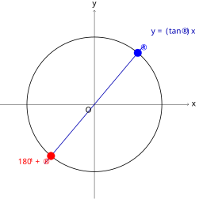
查看 TikZ 原始碼
\begin{document}
\begin{tikzpicture}[scale=3]
% coordinate axes
\draw[->] (-1.4,0) -- (1.4,0) node[right]{$x$};
\draw[->] (0,-1.4) -- (0,1.4) node[above]{$y$};
% unit circle
\draw[thick] (0,0) circle (1);
% terminal-side line through O with slope tan(50 deg) = 1.19 (k > 0 case)
\draw[thick, blue!70!black] (-0.739,-0.881) -- (0.739,0.881);
\coordinate (P1) at (0.643,0.766);
\coordinate (P2) at (-0.643,-0.766);
\filldraw[blue] (P1) circle (1.6pt);
\filldraw[red] (P2) circle (1.6pt);
\node[blue, above right] at (P1) {$\alpha$};
\node[red, below left] at (P2) {$180^{\circ}+\alpha$};
\node[blue!70!black, above right] at (0.8,0.98) {$y=(\tan\alpha)\,x$};
\node[below left] at (0,0) {$O$};
\end{tikzpicture}
\end{document}图 26-7C：
（ ）的终边都落在同一条过原点的直线 上，直线与单位圆的两个交点即 内的两组解 与 ；若 ，直线穿过第二、四象限，同理得两组解。
贯穿例：解
把
| 条件 | 全部解（通解） | 解的个数 | |
|---|---|---|---|
| 第一、三象限各一组 | |||
| 第二、四象限各一组 |
- 判解况：对任意实数
- 找特解：任取一个满足
- 通解展开：
- 限范围：取
解方程
找特解：由
最后强调两点。其一，特解的取法不影响结果：以
当方程同时出现多种三角函数时（如
用
解方程
由
综上
26.3 三角函数的图像（Graphs of Trigonometric Functions）
本节难度上限：T B ｜ C C ｜ E C ｜ Q C
本节掌握正弦、余弦、正切函数的图像特征，通过图像直观理解周期性、对称性与图像变换。自变量
以度计。
26.3.1 正弦、余弦、正切的图像
有了 §26.2 的周期性，就可以把正弦、余弦、正切的图像画出来了。三者的图像各有特点：正弦是「波浪线」，余弦与它形状相同、只是水平错开
先看正弦。图像不是「定理」直接掉下来的，而是来自 §26.2 的定义：取若干角度，逐点代入算出纵坐标，标出散点，再用平滑曲线串联。在
先在坐标系中标出这九个点，再用平滑曲线把它们串联起来，就得到
曲线画出来后，值域、周期、奇偶性、零点与极值都能直接从图像上看出来：
- 值域
- 奇函数：
- 零点：
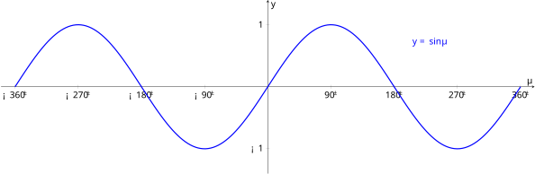
查看 TikZ 原始碼
\usepackage{pgfplots}
\pgfplotsset{compat=1.16}
\begin{document}
\begin{tikzpicture}
\begin{axis}[
width=12cm, height=5cm,
xmin=-380, xmax=380,
ymin=-1.4, ymax=1.4,
xtick={-360,-270,-180,-90,0,90,180,270,360},
xticklabels={$-360^{\circ}$,$-270^{\circ}$,$-180^{\circ}$,$-90^{\circ}$,$0^{\circ}$,$90^{\circ}$,$180^{\circ}$,$270^{\circ}$,$360^{\circ}$},
ytick={-1,0,1},
axis lines=middle,
xlabel={$\theta$}, ylabel={$y$},
samples=200,scale = 2
]
\addplot[domain=-360:360, blue, very thick] {sin(x)};
\node[blue] at (axis cs:230,0.72) {$y=\sin\theta$};
\end{axis}
\end{tikzpicture}
\end{document}图 26-8：
的图像（ ）。波形在 间振荡，周期 。
余弦的图像可同样描点得到（
- 值域
- 偶函数：
- 零点：
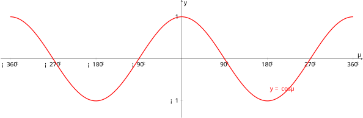
查看 TikZ 原始碼
\usepackage{pgfplots}
\pgfplotsset{compat=1.16}
\begin{document}
\begin{tikzpicture}
\begin{axis}[
width=12cm, height=5cm,
xmin=-380, xmax=380,
ymin=-1.4, ymax=1.4,
xtick={-360,-270,-180,-90,0,90,180,270,360},
xticklabels={$-360^{\circ}$,$-270^{\circ}$,$-180^{\circ}$,$-90^{\circ}$,$0^{\circ}$,$90^{\circ}$,$180^{\circ}$,$270^{\circ}$,$360^{\circ}$},
ytick={-1,0,1},
axis lines=middle,
xlabel={$\theta$}, ylabel={$y$},
samples=200,scale = 2
]
\addplot[domain=-360:360, red, very thick] {cos(x)};
\node[red] at (axis cs:210,-0.72) {$y=\cos\theta$};
\end{axis}
\end{tikzpicture}
\end{document}图 26-9：
的图像（ ）。与正弦波形相同，只是水平错开 。
正切与前两者有本质不同：它的值域是全体实数，且在
- 值域
- 奇函数：
- 垂直渐近线
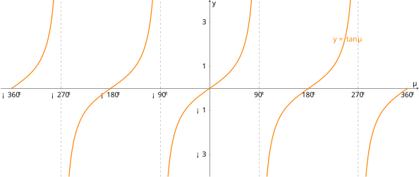
查看 TikZ 原始碼
\usepackage{pgfplots}
\pgfplotsset{compat=1.16}
\begin{document}
\begin{tikzpicture}
\begin{axis}[
width=12cm, height=6cm,
xmin=-380, xmax=380,
ymin=-4, ymax=4,
xtick={-360,-270,-180,-90,0,90,180,270,360},
xticklabels={$-360^{\circ}$,$-270^{\circ}$,$-180^{\circ}$,$-90^{\circ}$,$0^{\circ}$,$90^{\circ}$,$180^{\circ}$,$270^{\circ}$,$360^{\circ}$},
ytick={-3,-1,0,1,3},
axis lines=middle,
xlabel={$\theta$}, ylabel={$y$},
samples=200,scale = 2
]
\addplot[domain=-360:-271, orange, very thick] {tan(x)};
\addplot[domain=-269:-91, orange, very thick] {tan(x)};
\addplot[domain=-89:89, orange, very thick] {tan(x)};
\addplot[domain=91:269, orange, very thick] {tan(x)};
\addplot[domain=271:360, orange, very thick] {tan(x)};
% vertical asymptotes
\draw[dashed, gray] (axis cs:-270,-4) -- (axis cs:-270,4);
\draw[dashed, gray] (axis cs:-90,-4) -- (axis cs:-90,4);
\draw[dashed, gray] (axis cs:90,-4) -- (axis cs:90,4);
\draw[dashed, gray] (axis cs:270,-4) -- (axis cs:270,4);
\node[orange] at (axis cs:250,2.2) {$y=\tan\theta$};
\end{axis}
\end{tikzpicture}
\end{document}图 26-10：
的图像。在各区间内递增，被垂直渐近线 隔开，周期 。
写出
零点：
26.3.2 周期性在图像上的表现
在 §26.2.5 的
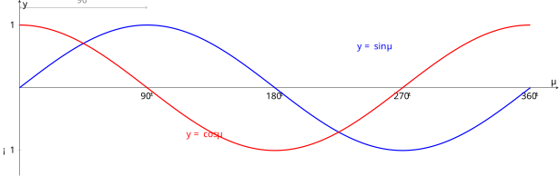
查看 TikZ 原始碼
\usepackage{pgfplots}
\pgfplotsset{compat=1.16}
\begin{document}
\begin{tikzpicture}
\begin{axis}[
width=12cm, height=5cm,
xmin=0, xmax=380,
ymin=-1.4, ymax=1.4,
xtick={0,90,180,270,360},
xticklabels={$0^{\circ}$,$90^{\circ}$,$180^{\circ}$,$270^{\circ}$,$360^{\circ}$},
ytick={-1,0,1},
axis lines=middle,
xlabel={$\theta$}, ylabel={$y$},
samples=200,
scale = 2
]
\addplot[domain=0:360, blue, very thick] {sin(x)};
\addplot[domain=0:360, red, very thick] {cos(x)};
\node[blue] at (axis cs:250,0.65) {$y=\sin\theta$};
\node[red] at (axis cs:130,-0.75) {$y=\cos\theta$};
\draw[<->, gray] (axis cs:90,1.28) -- (axis cs:0,1.28);
\node[gray] at (axis cs:45,1.4) {$90^{\circ}$};
\end{axis}
\end{tikzpicture}
\end{document}图 26-11：相位关系。
（红色）是 （蓝色）向左平移 的结果。
这个平移的画面，正是函数及其图像 中「函数变换」的一个实例。回忆 Ch19：对一般函数
既然平移可以做，拉伸、压缩、反射当然也可以。把这些变换组合起来作用于
对于
- 周期
- 相位平移
- 垂直平移
用函数及其图像 的变换链证明。改写
则从
逐步验证：
- 水平伸缩：
- 水平平移：
- 竖直伸缩：
- 竖直平移：
余弦变换规律一致；正切
用变换链演示
改写
- 振幅
- 周期
- 相位平移
- 垂直平移
26.4 反三角函数（Inverse Trigonometric Functions）
本节难度上限：T B ｜ C C ｜ E B ｜ Q C
三角函数因周期性非单射：同一函数值对应无穷多个角。为从函数值唯一找回角度，需将定义域限制到适当的单调区间，由此定义反正弦、反余弦、反正切（三角函数的逆变换）。本节掌握
的定义域、值域及基本恒等式，反三角函数的值以角度给出。
26.4.1 定义
三角函数在单调区间上也满足同样性质：把定义域限制到一段单调区间后，不同角对应不同函数值，于是对值域中任一
设
亦记作
注意：
，其中 是逆变换记号，不是指数。
图 26-12A：限制
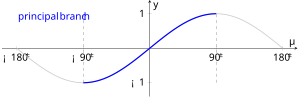
查看 TikZ 原始碼
\usepackage{pgfplots}
\pgfplotsset{compat=1.16}
\begin{document}
\begin{tikzpicture}
\begin{axis}[
width=12cm, height=5cm,
xmin=-200, xmax=200,
ymin=-1.4, ymax=1.4,
xtick={-180,-90,0,90,180},
xticklabels={$-180^{\circ}$,$-90^{\circ}$,$0^{\circ}$,$90^{\circ}$,$180^{\circ}$},
ytick={-1,0,1},
axis lines=middle,
xlabel={$\theta$}, ylabel={$y$},
samples=200,
]
% full sine curve (light)
\addplot[domain=-180:180, gray!40, thick] {sin(x)};
% principal branch (bold)
\addplot[domain=-90:90, blue, very thick] {sin(x)};
% boundary of principal interval
\draw[dashed, gray] (axis cs:-90,-1) -- (axis cs:-90,1);
\draw[dashed, gray] (axis cs:90,-1) -- (axis cs:90,1);
\node[blue] at (axis cs:-130,0.9) {principal branch};
\end{axis}
\end{tikzpicture}
\end{document}图 26-12A：
的主值支 （蓝色加粗），其余部分（灰色）被舍去。
反正弦回答了「正弦等于
设
亦记作
图 26-12B：限制
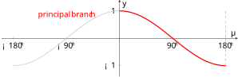
查看 TikZ 原始碼
\usepackage{pgfplots}
\pgfplotsset{compat=1.16}
\begin{document}
\begin{tikzpicture}
\begin{axis}[
width=12cm, height=5cm,
xmin=-200, xmax=200,
ymin=-1.4, ymax=1.4,
xtick={-180,-90,0,90,180},
xticklabels={$-180^{\circ}$,$-90^{\circ}$,$0^{\circ}$,$90^{\circ}$,$180^{\circ}$},
ytick={-1,0,1},
axis lines=middle,
xlabel={$\theta$}, ylabel={$y$},
samples=200,
]
% full cosine curve (light)
\addplot[domain=-180:180, gray!40, thick] {cos(x)};
% principal branch (bold)
\addplot[domain=0:180, red, very thick] {cos(x)};
% boundary of principal interval
\draw[dashed, gray] (axis cs:0,-1) -- (axis cs:0,1);
\draw[dashed, gray] (axis cs:180,-1) -- (axis cs:180,1);
\node[red] at (axis cs:-90,0.85) {principal branch};
\end{axis}
\end{tikzpicture}
\end{document}图 26-12B：
的主值支 （红色加粗），其余部分（灰色）被舍去。
正切的值域是整个实数集，因此
设
亦记作
三角学(I) 中的
图 26-12C：限制
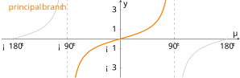
查看 TikZ 原始碼
\usepackage{pgfplots}
\pgfplotsset{compat=1.16}
\begin{document}
\begin{tikzpicture}
\begin{axis}[
width=12cm, height=5cm,
xmin=-200, xmax=200,
ymin=-4, ymax=4,
xtick={-180,-90,0,90,180},
xticklabels={$-180^{\circ}$,$-90^{\circ}$,$0^{\circ}$,$90^{\circ}$,$180^{\circ}$},
ytick={-3,-1,0,1,3},
axis lines=middle,
xlabel={$\theta$}, ylabel={$y$},
samples=200,
]
% full tangent curves (light)
\addplot[domain=-180:-91, gray!40, thick] {tan(x)};
\addplot[domain=-89:89, gray!40, thick] {tan(x)};
\addplot[domain=91:180, gray!40, thick] {tan(x)};
% principal branch (bold)
\addplot[domain=-89:89, orange, very thick] {tan(x)};
% vertical asymptotes
\draw[dashed, gray] (axis cs:-90,-4) -- (axis cs:-90,4);
\draw[dashed, gray] (axis cs:90,-4) -- (axis cs:90,4);
\node[orange] at (axis cs:-140,3.2) {principal branch};
\end{axis}
\end{tikzpicture}
\end{document}图 26-12C：
的主值支 （橙色加粗），其余分支（灰色）被舍去。
这三段单调区间正是后面选作主值区间的候选：
在主值区间内，先取三角函数再取逆变换应回到原角（即
26.4.2 反三角恒等式
由定义
两个方向的成立范围并不相同，第一方向恒成立：
处理方法： 当
- 判断
- 用化锐角公式化为
- 据符号取逆变换值（正得
例如
求
求
下面两个推论（互补关系、负角关系）的证明核心都是 §26.2.5 的化锐角公式：互补关系用
查看 TikZ 原始碼
\begin{document}
\begin{tikzpicture}[scale=2]
% right triangle: O(left-bottom), A(right-bottom, right angle), B(right-top)
\coordinate (O) at (0,0);
\coordinate (A) at (3,0);
\coordinate (B) at (3,1.8);
\draw[thick] (O) -- (A) node[midway, below] {$\cos\alpha=\sqrt{1-x^2}$};
\draw[thick] (A) -- (B) node[midway, right] {$\sin\alpha=x$};
\draw[thick] (B) -- (O) node[midway, above left] {$1$};
% right angle mark at A
\draw (2.7,0) -- (2.7,0.3) -- (3,0.3);
% angle alpha at O
\draw (0.55,0) arc (0:31:0.55);
\node at (0.36,0.28) {$\alpha=\arcsin x$};
% angle beta at B
\draw (2.66,1.52) arc (235:270:0.5);
\node at (2.58,1.78) {$\beta=\arccos x$};
\end{tikzpicture}
\end{document}图 26-13：互补关系的直角三角形解释。在斜边为
的直角三角形中， 与 恰为两锐角，其和为 。
令
求
即
设
求
由负角关系逐项化归：
26.5 小结（Summary）
四条主线：
- 弧度换算（§26.1）：弧度
- 任意角的三角比（§26.2）：单位圆定义
- 三角函数的图像（§26.3）：
- 反三角函数（§26.4）：
易错点：
- 解
公式总表
| 类别 | 公式 | 备注 |
|---|---|---|
| 弧度定义 | 纯数 | |
| 角度换算 | 角度 |
|
| 单位圆定义 | ||
| 基本恒等式 | ||
| 周期性 | 最小正周期 | |
| 通解 | ||
| 图像变换 | ||
| 反三角 |
正弦定理、余弦定理及三角形面积公式（含希罗公式）将在立体几何 (II) 中作为预备知识系统引入。本章聚焦于三角函数作为「函数」的性质（定义、周期、图像、逆变换），是后续三角解题的工具基础。
词汇表
| 中文 | 英文 | 备注 |
|---|---|---|
| 弧度 | radian | |
| 弧度法 | radian measure | |
| 弧长 | arc length | |
| 圆心角 | central angle | |
| 任意角 | general angle | |
| 始边 | initial side | |
| 终边 | terminal side | |
| 标准位置 | standard position | |
| 零角 | zero angle | |
| 终边相同的角 | coterminal angles | |
| 单位圆 | unit circle | |
| 三角函数 | trigonometric function | |
| 周期 / 周期性 | period / periodicity | |
| 最小正周期 | fundamental period | |
| 象限 | quadrant | |
| 化锐角公式 | reduction formula | |
| 通解 | general solution | |
| 振幅 | amplitude | |
| 相位 / 相位平移 | phase / phase shift | |
| 垂直平移 | vertical shift | |
| 反三角函数 | inverse trigonometric function | |
| 反正弦 | arcsine | |
| 反余弦 | arccosine | |
| 反正切 | arctangent | |
| 主值区间 | principal value interval | |
| 渐近线 | asymptote | |
| 奇函数 | odd function | |
| 偶函数 | even function | |
| 单调区间 | monotonic interval |
✅ 已執行（2026-09-02）：注释 1（L621，全面重写参考角法）已落实。§26.2.6 参考角法全量重写：三类方程
✅ 已執行（2026-09-02）：第二轮方案已落实。§26.2.6 解法脱离参考角、重构为通解法（判解况 → 找特解 → 通解展开 → 限范围），图 26-7/7B/7C 保留；恒等式转换法 3 处、§26.4.2 2 处措辞与词汇表「参考角」行同步处理；Ch27 讲义 10 处与考纲对照文件随批同步；Textbook Plan 按方案默认不动。方案细节已删除。
反向链接
正在加载反向链接…
本文引用
正在加载…